Find your Flow.
Forge your Future.
Ich verbinde Menschen, Organisation und Technologie und übersetze komplexe Veränderung in klare Zielbilder, tragfähige Beteiligung und wirksame Umsetzung.
Organisationen verstehe ich als lebendige Systeme, die sich fortlaufend verändern und weiterentwickeln. Lebendigkeit lässt sich messen als Fähigkeit zur Resonanz und Beziehung zwischen den Elementen des Systems.
Expertise.
Technologie verändert Möglichkeiten. Organisationen entscheiden, ob daraus Wirkung entsteht. Menschen entscheiden, ob Veränderung gelebt wird. Meine Arbeit setzt an allen drei Ebenen an - von der Diagnose bis zur nachhaltigen Verankerung.
Change Architecture
Vision, Change Story, Readiness, Impact und Stakeholder systematisch verbinden.
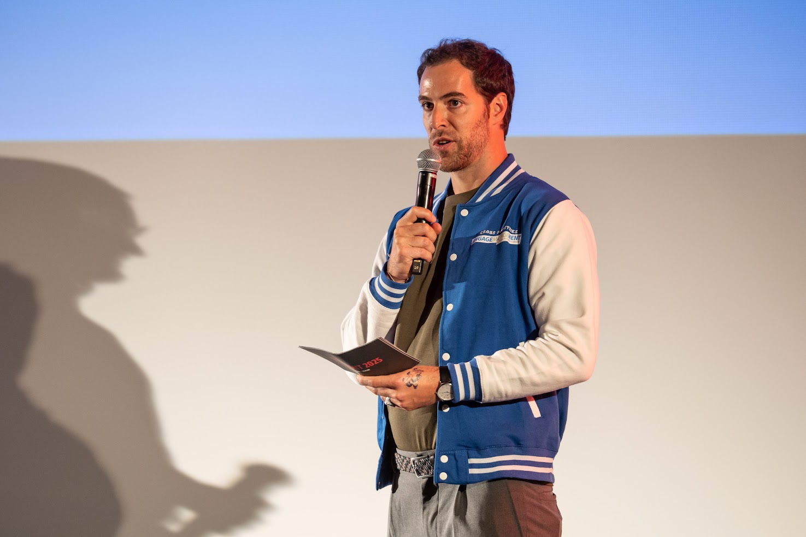
Change Architecture
Ich entwickle das Zielbild einer Transformation, verbinde es mit einer nachvollziehbaren Change Story und mache Fortschritt durch Readiness- und Impact-Analysen sichtbar - abgestimmt auf die relevanten Stakeholder.
→ Projektbeispiel: adesso AI ForceZukunftsfähige Organisation
Teams, Rollen, Routinen und Zusammenarbeit auf Ergebnisorientierung ausrichten.
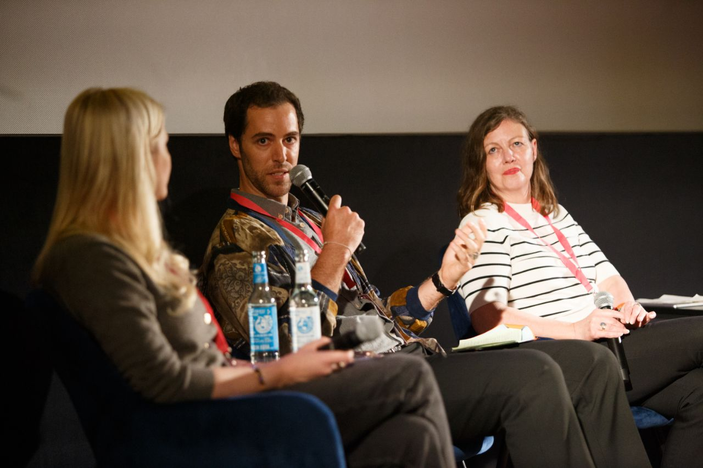
Zukunftsfähige Organisation
Ich arbeite mit Teams an klaren Rollen, tragfähigen Entscheidungswegen und Routinen, die Zusammenarbeit im Alltag tatsächlich verändern - nicht nur auf dem Papier.
→ Projektbeispiel: ADAC IT ServicesLeadership & Coaching
Führungskräfte und Teams in Klarheit, Selbstwirksamkeit und Verantwortung stärken.
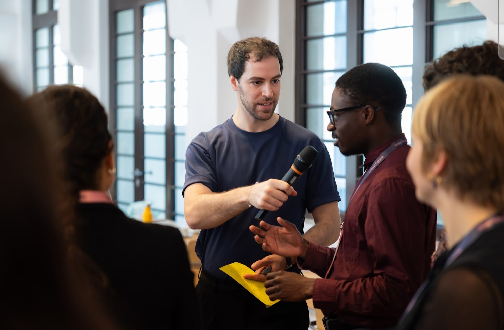
Leadership & Coaching
Im Einzel- und Teamcoaching schaffe ich Klarheit über Rolle und Wirkung, stärke Selbstwirksamkeit und begleite Führungskräfte darin, Verantwortung bewusst zu übernehmen.
→ Projektbeispiel: SciLeadFacilitation
Komplexe Gruppenprozesse strukturieren und tragfähige Entscheidungen ermöglichen.
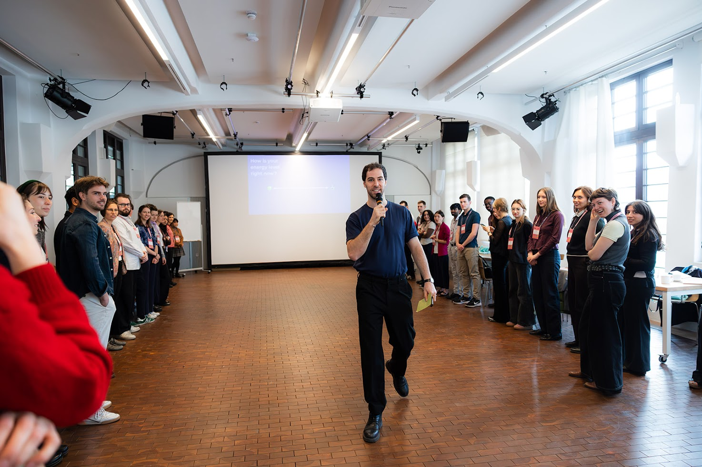
Facilitation
Ob Workshop, Konferenz oder Community-Format: Ich strukturiere Gruppenprozesse so, dass unterschiedliche Perspektiven zusammenfinden und daraus tragfähige, gemeinsam getragene Entscheidungen entstehen.
→ Projektbeispiel: CREATE ConventionDigital Transformation & AI Adoption
Akzeptanz, Befähigung und nachhaltige Nutzung neuer Technologien gestalten.
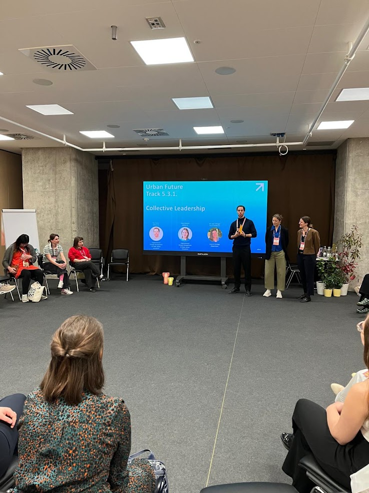
Digital Transformation & AI Adoption
Ich begleite die Einführung neuer digitaler Werkzeuge über die reine Technik hinaus - mit Fokus auf Akzeptanz, Befähigung der Nutzenden und nachhaltiger Verankerung im Arbeitsalltag.
→ Projektbeispiel: M365 AdoptionPublic Innovation
Verwaltungslogiken, Stakeholder und digitale Produktentwicklung zusammenbringen.
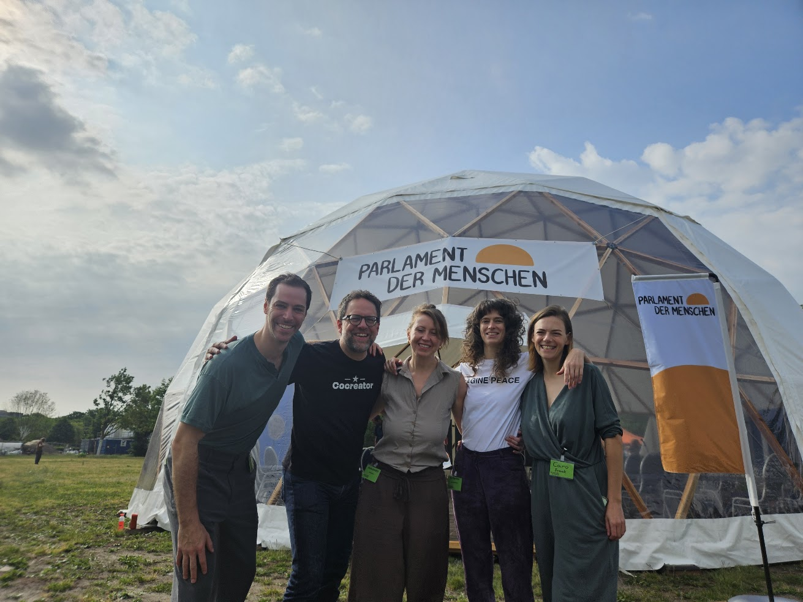
Public Innovation
In der öffentlichen Verwaltung verbinde ich Verwaltungslogik, Stakeholder-Interessen und agile Produktentwicklung - damit digitale Vorhaben nicht an der Systemrealität scheitern.
→ Projektbeispiel: ITZBundMethoden & Kompetenzen
Branchen & Kontexte
Workshops und Keynotes auf Deutsch und Englisch.
Projekte.
Mein Beitrag in Transformationen folgt einem klaren Muster - unabhängig davon, ob es um ein KI-Programm, eine Bundesbehörde oder ein skaliertes Entwicklungsteam geht.
Orientieren
Zielbild, Kontext und Betroffenheit klären.
Mobilisieren
Stakeholder, Führung und Multiplikatoren aktivieren.
Umsetzen
Teams, Roadmaps und Lernformate wirksam machen.
Verankern
Adoption, Feedback und neue Routinen stabilisieren.
Orchestrierung der internen KI-Transformation
Modernisierung der Haushaltsverfahren des Bundes
Zusammenarbeit & Steuerung im skalierten Entwicklungsteam
IT-Transformation & Change-Begleitung
Digitale Plattformen & M365 Adoption
Lehre & Engagement
THE GOOD CHANGE
SciLead - Neue Führung in der Wissenschaft
CREATE Convention - CREATE Regeneration
Frühere Stationen (2017–2024)
- 01/2023–03/2024 - Teilprojektleitung, Work4Germany Fellowship (Deutsche Bundesverwaltung)
- 02/2022–12/2022 - Teilprojektleitung, Tech4Germany Fellowship (Deutsche Bundesverwaltung)
- 04/2021–01/2022 - Coordinator, Biomimicry Academy (Aufbau des europäischen Biomimicry-Netzwerks)
- 02/2019–01/2022 - Programm-Manager & Innovation Coach, Digitale Werkstatt, Lecos GmbH (Stadtverwaltung Leipzig) - u.a. Drohnen-Kompetenzen, Augmented Reality für Stadtplanung, agiles Fokusteam
- 04/2018–10/2018 - Undergraduate Research Fellow, Institut für angewandte Forschung Urbane Zukunft, FH Potsdam (Forschung zu digitalen Mikrokulturen, Projekt THEMIS.COG)
- 10/2017–03/2018 - Researcher & HR Assistant, 2b AHEAD ThinkTank GmbH, Leipzig
Publikationen
- Organizational Change Management neu denken: 4D-Mapping für komplexe Systeme - adesso Blog, 2026
- Forms of Self-organized Collaboration in Digital Space - An Exploration of Small Group Microcultures on GitHub, Forschungsarbeit FH Potsdam
- Urbane Zukunft - Transformationsprozesse in der Stadt - 2017
- Innovative und nachhaltige Geschäftsmodelle - Wirtschaftsethnologische Studien in Mittelhessen, Panama Verlag, 2014
Zertifikate & Ausbildung
Change & Transformation
- Prosci® Certified Change Practitioner
- Prozessbegleiter für globale Transformation (tealbirds & L³)
- u.lab 0x: Leading Awareness-Based Systems Change
- Manager für angewandte KI-Transformation (IHK)
- ExO Foundations
Agile & Leadership
- Certified ScrumMaster (Scrum Alliance)
- Integrales Führungskräfte-Training
- Führung in selbstgesteuerten Teams
Design, Zukunft & Technologie
- Design Thinking Basic & Advanced (Hasso-Plattner-Institut)
- The Future of Work: Preparing for Disruption
- Urban Nature: Cities, Nature and Innovation
In Aktion.
Referenzen.
Auswahl an Organisationen und Institutionen, mit denen ich in den letzten Jahren zusammengearbeitet, studiert, geforscht oder mich weitergebildet habe.
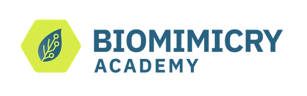
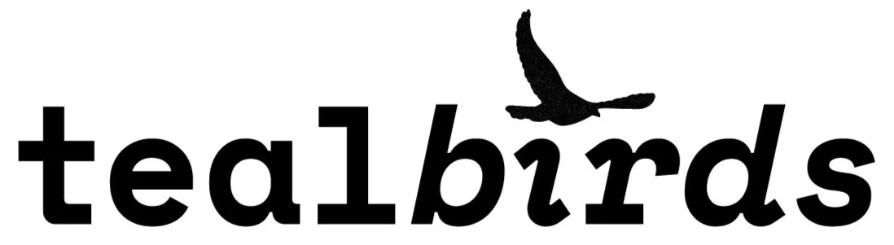

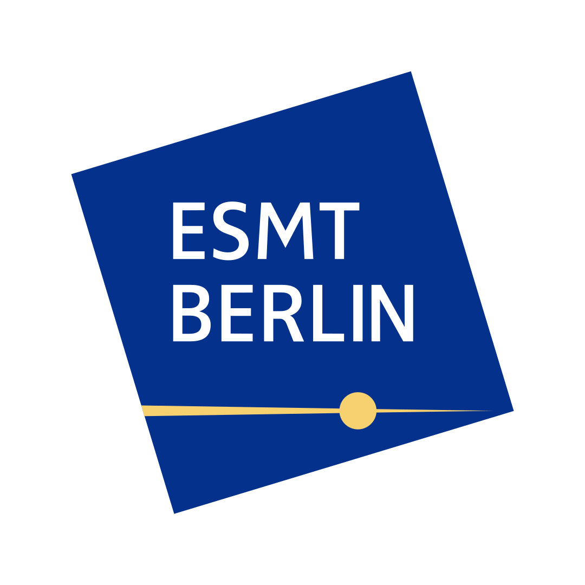

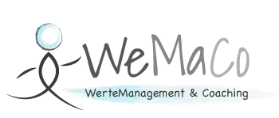
Auch gelistet als Speaker bei Urban Future und CREATE Convention.
Bio.
Im Kern meiner Arbeit steht ein tiefes Interesse an ko-kreativer, lebensbejahender Führung - mit einem Hintergrund in Kulturanthropologie, Design Thinking, Agile, Biomimikry und Transformationsmanagement.
Mich beschäftigt vor allem: Wie aktiviert man menschliches Potenzial in Organisationen? Und wie gestaltet man gemeinsam evolutionäre, lernfähige Strukturen? Dafür habe ich Arbeitskulturen in Australien und Südostasien erforscht, ein Kulturzentrum in Marburg gegründet und mehrere Berlin-Meetups zur Zukunft der Arbeit mitgestaltet.
„In der Natur wird nichts erzwungen, und doch wird alles vollbracht.“ - Lao-Tse
Diese Haltung lebe ich in zwei Rollen, die sich gegenseitig schärfen: als Coach und Speaker unter der Marke FLOWARDS ebenso wie als Senior Consultant für Organizational Change Management bei adesso SE - siehe Expertise und Projekte.
Stationen
- 2011–2015 - B.A. Cultural Anthropology & Ethnology, Philipps-Universität Marburg
- 2014–2016 - Gründer, OHM - Offenes Haus Marburg (Raum für konstruktive, kreative Ideen)
- 2016 - B.A. Geography, Goethe-Universität Frankfurt am Main
- 2016–2019 - M.A. Urbane Zukunft, Fachhochschule Potsdam
- seit 2019 - Innovation Coach, Change Manager & Facilitator in öffentlicher Verwaltung und Wirtschaft - die ausgewählten Projekte und Mandate finden sich unter Projekte.
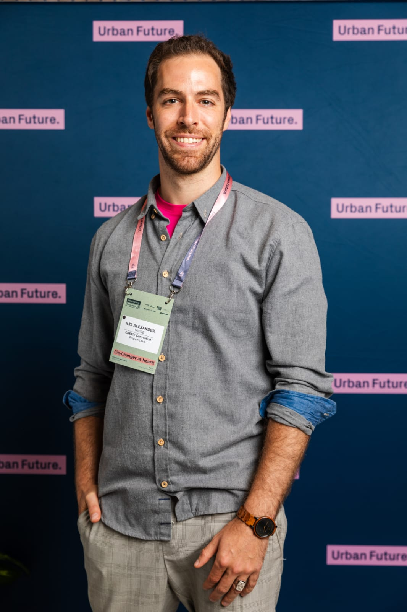
Angebot & Kontakt.
Ob Einzelcoaching, Teamentwicklung oder Keynote - wähle das Format, das zu deinem Anliegen passt, und sende mir eine unverbindliche Anfrage.
- Leadership CoachingEinzel- und Teamcoaching für regeneratives, lebensbejahendes Führen.
- OrganisationsentwicklungBegleitung evolutionärer Organisationsformen und Change-Prozesse.
- Workshops & FacilitationDesign Thinking, Biomimikry und transformatives Lernen - praxisnah vermittelt.
- Keynotes & VorträgeZukunft der Arbeit und regenerative Führung - mit Praxisbeispielen statt reiner Theorie.